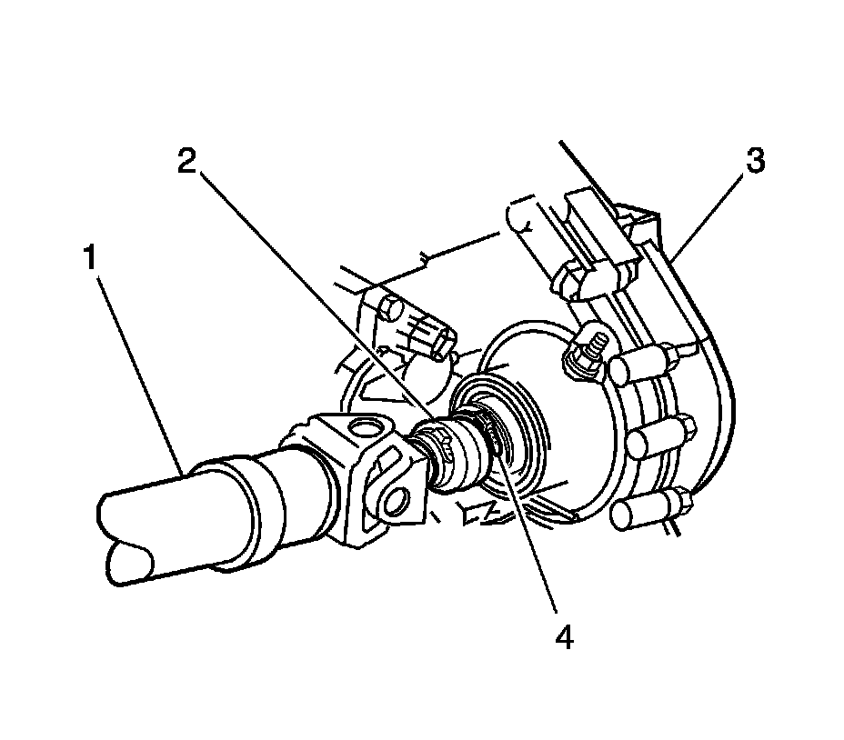
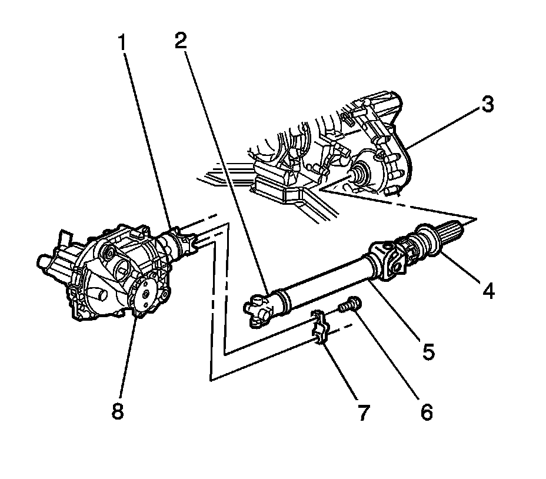
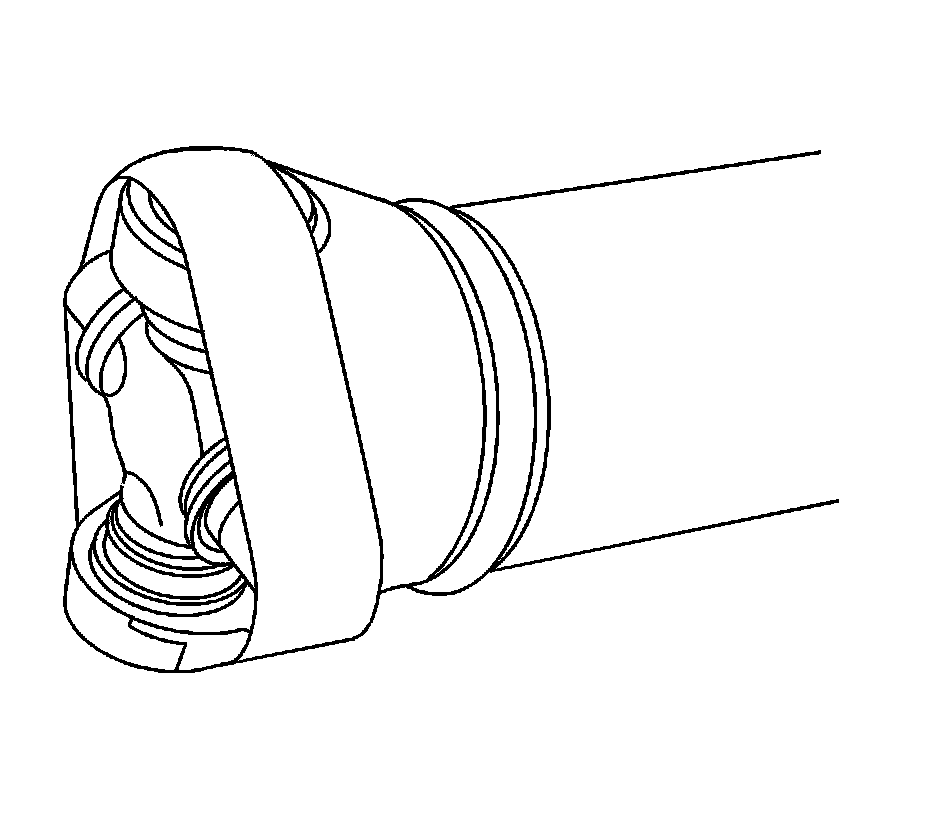
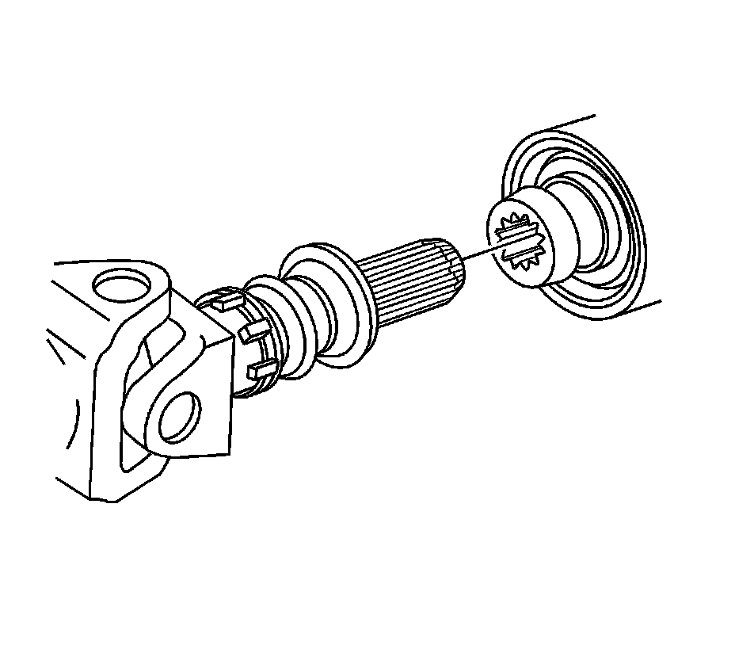
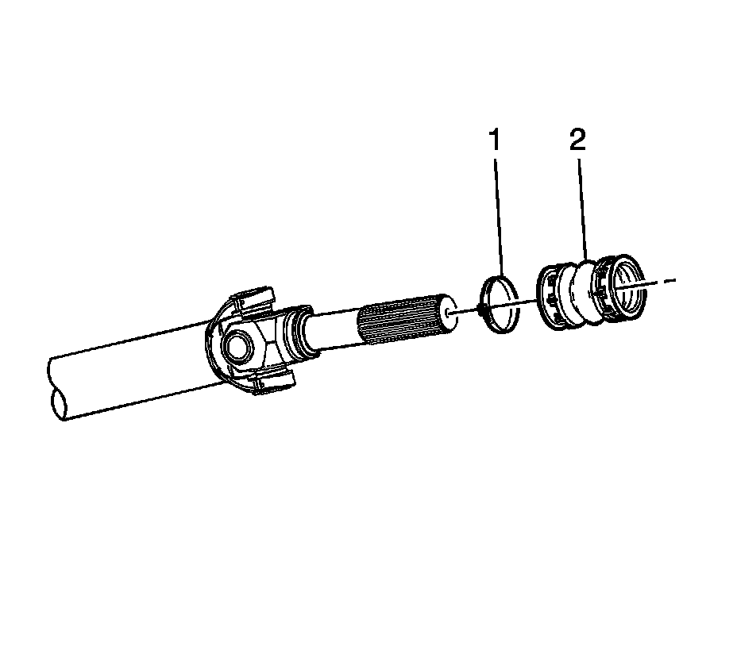

Front Propeller Shaft Replacement
Front Propeller Shaft Replacement
Tools Required
J 43218 Clamp Pliers - Narrow Jaw
Removal Procedure
Important: Before disassembly, observe and accurately reference mark all driveline components relative to the propeller shaft and axles. These items include the following components:
^ The propeller shafts
^ The wheel drive shafts
^ The pinion flanges
^ The output shafts
Assemble all components in the exact relationship to each other as they were prior to removal. Observe all published specifications and torque values, and any measurements obtained prior to disassembly.
1. Raise the vehicle. Refer to Lifting and Jacking the Vehicle.
2. Remove the transfer case shield, if equipped. Refer to the appropriate procedure:
^ Transfer Case Shield Replacement for the BW 4485-NR3 transfer case
^ Transfer Case Shield Replacement for the NVG 246-NP8 transfer case

3. Remove the clamp (4) at the transfer case by prying up the exposed end of the clamp with a flat-bladed tool.
4. Reference mark the relationship of the propeller shaft to the front axle pinon yoke.

Notice: When removing the propeller shaft, do not attempt to remove the shaft by pounding on the yoke ears or using a tool between the yoke and the universal joint. If the propeller shaft is removed by using such means, the injection joints may fracture and lead to premature failure of the joint.
5. Remove the bolts (6) and the yoke retainers (7) from the front axle pinion yoke (1).
Important: Do not drop the bearing cap assemblies of the yoke end.
6. Disconnect the propeller shaft (2) from the front axle pinion yoke (1).
Wrap the bearing caps with tape in order to prevent the loss of bearing rollers.

7. Use tape to secure the bearing caps.

8. Remove the boot from the groove on the transfer case output shaft.
9. Remove the propeller shaft from the transfer case output shaft by sliding the propeller shaft forward.

10. Remove the clamp (1) from the propeller shaft boot (2), if needed.
11. Remove the propeller shaft boot (2) from the propeller shaft, if needed.
Installation Procedure
1. Inspect the splines of the transfer case output shaft for a sufficient coating of lubricant. If the output shaft does not have a sufficient coating of lubricant, lubricate the shaft with grease, GM P/N 12345879 (Canadian P/N 10953511), or equivalent lubricant meeting GM Specification 9985830.
2. Install the propeller shaft boot (2).
3. Install the propeller shaft boot clamp (1).
4. Install the propeller shaft splines into the transfer case output shaft.
5. Install the propeller shaft (5) to the front axle pinion yoke (1).
Align the reference marks made during removal.
Notice: Refer to Fastener Notice.
6. Install the yoke retainers (7) and the bolts (6).
Tighten the yoke retainer bolts to 25 N.m (18 lb ft).
7. Install the boot onto the transfer case output shaft until the boot snaps into the groove on the output shaft.
8. Using the J 43218 to crimp both clamps.
9. Install the transfer case shield, if equipped. Refer to the appropriate procedure:
^ Transfer Case Shield Replacement for the BW 4485-NR3 transfer case
^ Transfer Case Shield Replacement for the NVG 246-NP8 transfer case
10. Lower the vehicle.